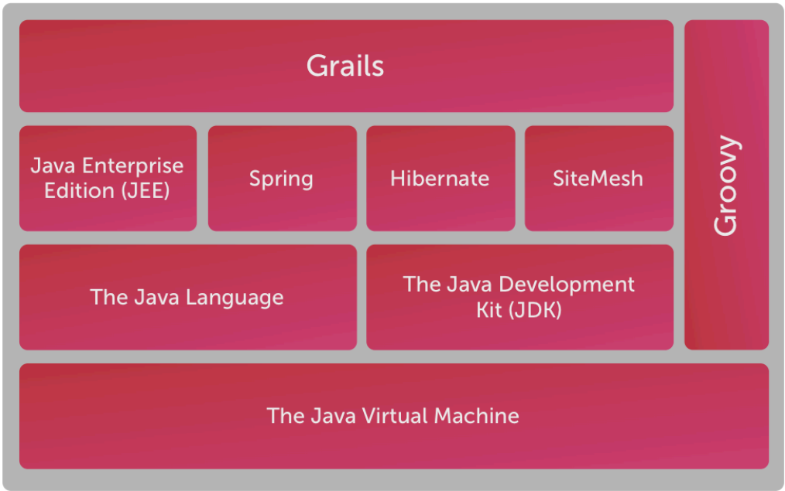
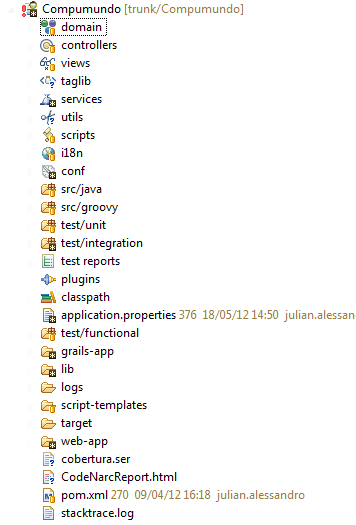

Groovy on Grails

Julian Alessandro
Matias Alvarez Duran
Alan
Octubre, 2012
Agenda
- Que es Groovy?
- Clases en Groovy
- Java vs Groovy
- Que es Grails?
- Grails Stack
- Convention Over Configuration
- Plugins
- GORM
- Artifacts
- Demo
Que es Groovy?
- Lenguaje dinámico para la JVM
- Inspirado en Smalltalk, Phyton, Ruby, etc.
- Se integra con Java (Se puede tener codigo java y groovy junto)
Sitio Oficial
Clases en Groovy
class Person {
static personCounter = 0
def age, name // this creates setter and getter methods
private alive
def die() {
alive = false
println "$name has died at the age of $age."
alive
}
def kill(anotherPerson) {
println "$name is killing $anotherPerson.name."
anotherPerson.die()
}
def isStillAlive() {
alive
}
def getYearOfBirth() {
new Date().year - age
}
}
Clases en Groovy
- Getters y Setters dinámicos
- Constructores dinámicos
- Definición de variables sin tipar
- Definición de métodos sin tipar
- Última sentencia del método es el return
- Sin separadores de líneas ";"
- Invocación a métodos sin paréntesis
- Métodos públicos por defecto
- "def" no es parte de la signatura, es el tipo de valor que retorna
Getting started
Java vs Groovy
public class Persona {
private String nombre;
private String apellido;
private Integer edad;
private List direcciones;
public String getNombre() { return nombre; }
public void setNombre(String nombre) { this.nombre = nombre; }
public String getApellido() { return apellido; }
public void setApellido(String apellido) { this.apellido = apellido; }
public Integer getEdad() { return edad; }
public void setEdad(Integer edad) { this.edad = edad; }
public List getDirecciones() { return direcciones; }
public void setDirecciones(List direcciones) { this.direcciones = direcciones; }
public static void main(String[] args) {
Persona persona = new Persona();
persona.setNombre("Matias");
persona.setApellido("Alvarez");
persona.setEdad(25);
persona.setDirecciones(new ArrayList());
persona.getDirecciones().add("La plata 324, entre 8 y 9");
System.out.println(persona);
}
}
Java vs Groovy
class Persona {
def nombre
def apellido
def edad
def direcciones //def direcciones = []
def main(args) {
def persona = new Persona(nombre:"Matias", apellido:"Alvarez")
persona.edad = 25;
persona.direcciones = []
persona.direcciones << "La plata 324, entre 8 y 9"
println persona
}
}
Que es Grails?
- Framework web (MVC) de desarrollo rapido (RAD - rapid application development)
- Stack completo de desarrollo, desde el ORM hasta la vista
- Basado en tecnologías existentes, probadas y standars como spring, hibernate, sitemesh, tomcat, etc
- Tiene un potente sistema de plugins y sistema de entornos en runtime
The Search is Over
Grails Stack

Convention Over Configuration
- Convención sobre configuración. DRYS
- Manteniendo la convención no hace falta configurar casi nada
- Cada artefacto tiene su lugar dentro de una estructura de directorios
- Se pueden crear clases de dominio, servicios, controllers, si necesidad de configuración y/o anotaciones
DRY
Convention Over Configuration

Plugins
- Existe una gran cantidad de plugins desarrollados por la comunidad
- Se integran fácilmente con las aplicaciones
- Algunos ejemplos:
- Mensajería, Mails, Testing, Schedulers, Scaffolding, Backbone, etc.
- Se pueden crear fácilmente nuestros propios plugins
- La estructura de directorios de los plugins es muy similar
GORM
- Es el ORM de grails (Groovy Object Relational Mapping)
- Casi toda la configuración es por convención
- CRUD out of the box
- Finders dinámicos
- Criterias, Named Queries, HQL, etc.
Ejemplo
Muchas Gracias!
Julian Alessandro
julian.alessandro@globallogic.com
Matias Alvarez Duran
matias.alvarez@globallogic.com
www.globallogic.com